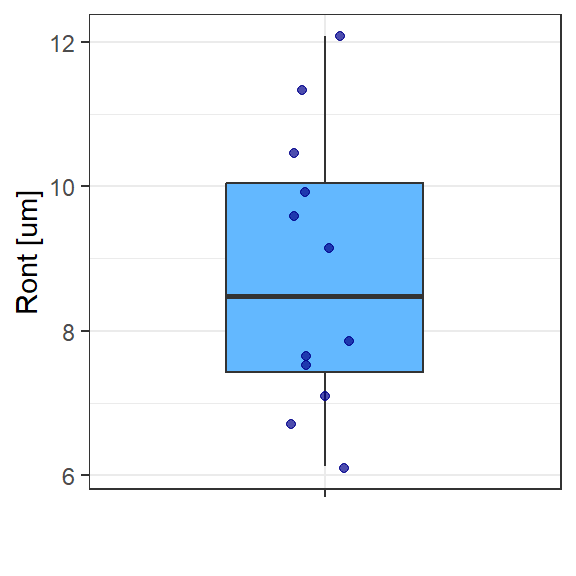
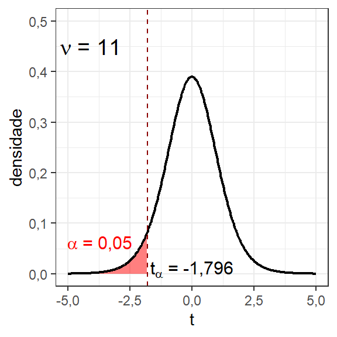
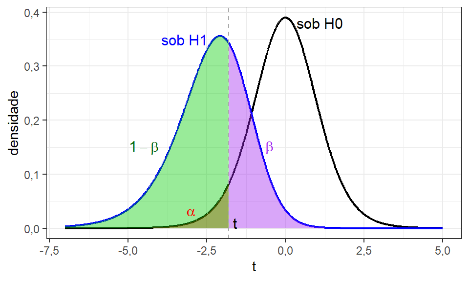
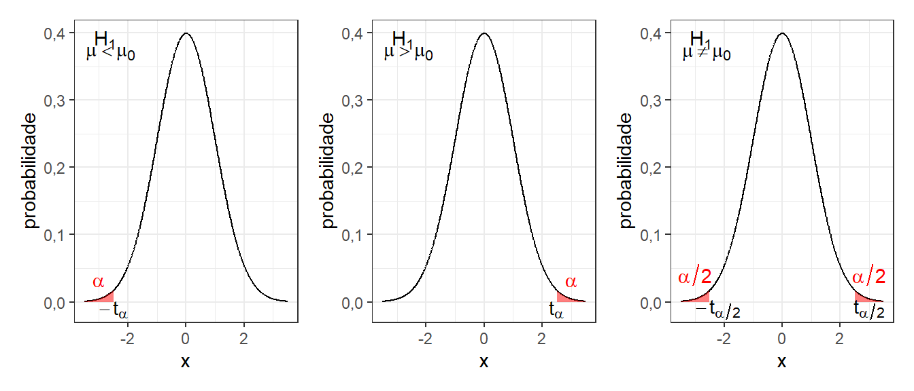
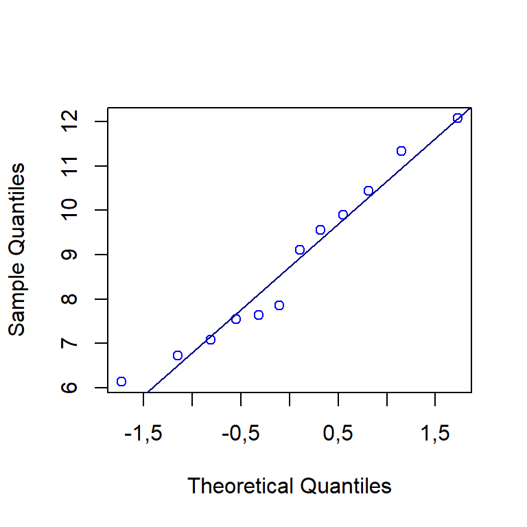
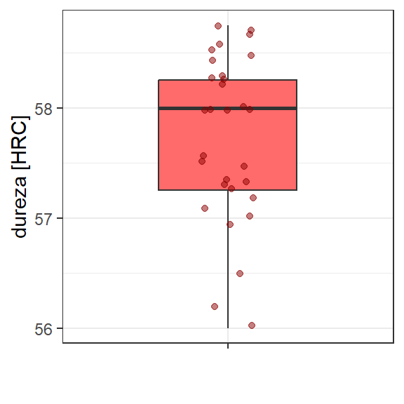
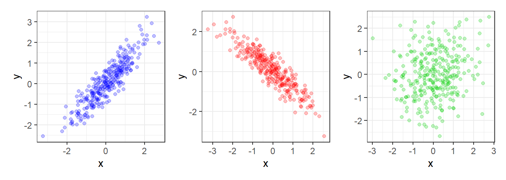
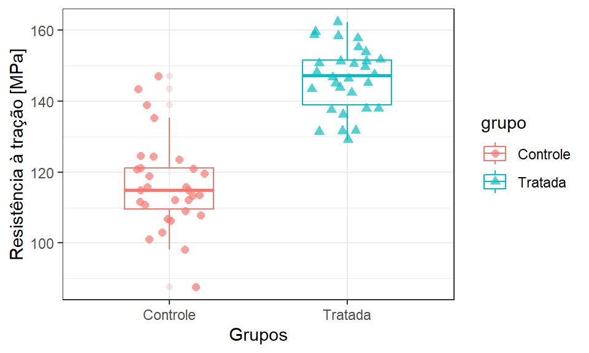
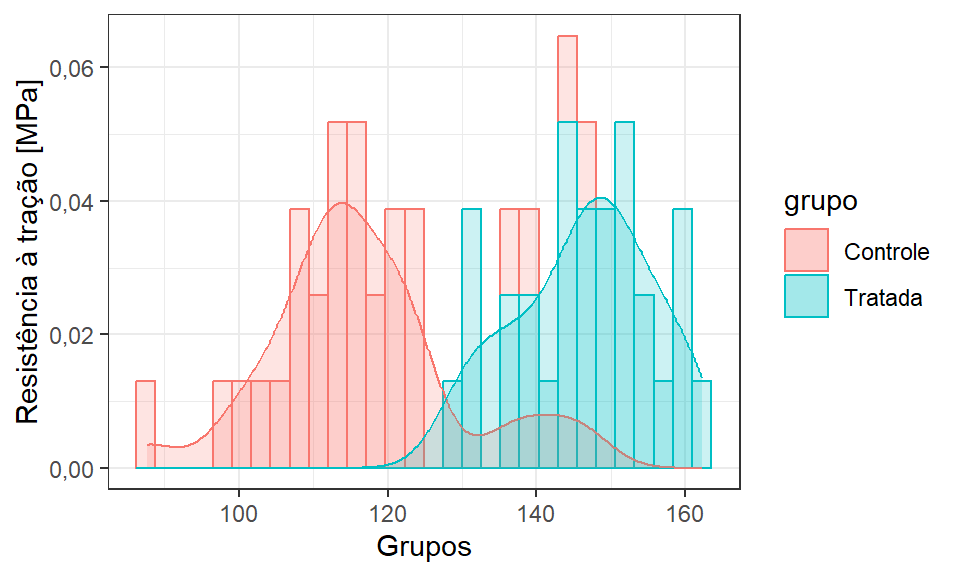
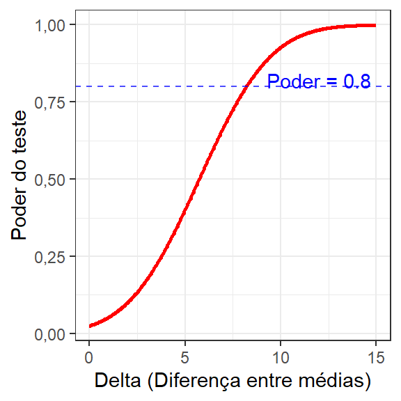

# dados
Ront <- c(6.7249, 7.8566, 7.5466, 12.0763, 7.6331, 6.1340,
9.9053, 10.4416, 11.3306, 7.0836, 9.5623, 9.1118)
# quartis (quantis que dividem a amostra em quatro partes)
# summary(Ront)2 Testes de hipóteses para média de uma e duas amostras
2.1 Introdução
Neste capítulo serão abordados alguns testes de hipóteses para média de uma e duas amostras. Alguns destes testes são fundamentais em planejamentos de experimentos e inferência de modelos muito populares. Existem diversas situações que testes simples como os explicitados aqui são suficientes para comprovar o efeito ou testar diferenças entre médias considerando uma ou duas amostras. Ademais, existem planejamentos que consideram múltiplós fatores ou variáveis em estudo, mas usam do teste t para inferência de coeficientes de modelos de regressão. Portanto, é essencial compreender os conceitos deste capítulo.
Neste capítulo são utilizados os pacotes asbio, DescTools, ggpplot2 para gráficos, além das funções básicas do R. Recomenda-se a instalação destes utilizando o comando install.packages("<nome_pacote>"). Sempre que aparecer nos blocos de código R propostos o comando library(<nome_pacote>) para carregar um determinado pacote, antes este deve ser instalado.
2.2 Teste t para média de uma amostra
Seja uma amostra aleatória de \(n\) observações, \(x_1, x_2, ..., x_n\), retirada de uma va que segue a distribuição normal, um problema comum de decisão é o teste de hipóteses. Neste tipo de teste pode-se inferir, por exemplo, se o parâmetro em estudo é igual a um determinado valor de interesse ou não. No caso da média de uma determinada amostra de interesse, o teste \(t\) pode ser utilizado.
::: {#exm-t1} ## Teste t para a média da circularidade total
Considere uma amostra de 12 observações da circularidade total \(Ron_t\) de furos obtidos por fresamento helicoidal no aço inox superduplex UNS S32760. A Figura 2.1 apresenta um boxplot de Ront. Um engenheiro ou pesquisador pode desejar inferir se a média de Ront é menor que 10 \(\mu m\) por considerar este limite superior como aceitável para uma determinada aplicação. :::
A seguir apresenta-se a amostra com 12 observações da circularidade total.

Para responder à pergunta do experimentador, deve-se formular as hipóteses a serem testadas, sendo \(H_0\) a hipótese nula e \(H_1\) a hipótese alternativa, conforme segue.
\[ \begin{align} H_0:& \mu = 10 \\ H_1:& \mu < 10 \end{align} \]
O valor de interesse testado na hipótese é denotado \(\mu_0\). Uma vez que o analista já coletou a amostra para testar sua hipótese, pode-se seguir com o cláculo da estatística do teste. Como ele coletou uma amostra de tamanho pequeno, além de a variância populacional ser desconhecida, deve-se utilizar o teste \(t\) para uma amostra, baseado na distribuição \(t\) de Student. A estatística do teste para testar uma hipótese sobre a média de uma amostra neste caso é apresentada na Equação 2.1. Por este cálculo padroniza-se a distribuição amostral obtida em relação ao valor hipotético, havendo mais evidência para rejeição da hipótese nula, quanto maior for o desvio negativo de \(t_0\) em relação a zero. Deve-se recordar que, pelo TCL, o desvio-padrão da média é \(s_{\bar{x}} = s/\sqrt{n}\).
\[ t_0 = \frac{\bar{x}-\mu_0}{s/\sqrt{n}} \tag{2.1}\]
Para o exemplo esta estatística pode ser facilmente calculada no R como segue.
# média de Ront
x_bar <- mean(Ront)
# desvio-padrão de Ront
s <- sd(Ront)
# tamanho amostral
n <- length(Ront)
# valor da hipótese
mu_0 <- 10
# estatística do teste t
t_0 <- (x_bar - mu_0)/(s/sqrt(n))
t_0[1] -2.211601Para julgar se a hipótese nula deve ser rejeitada em favor da alternativa ou não, deve-se definir uma região crítica ou região de rejeição de \(H_0\). Para tal, deve-se definir um nível de significância \(\alpha\) de interesse. O nível de significância consiste em uma probabilidade de erro na rejeição da hipótese nula que se assume ao testar a hipótese. Quanto menor, menor a probabilidade de rejeitar a hipótese nula erroneamente caso esta seja verdadeira. Entretanto, quanto menor o nível de significância \(\alpha\), mais difícil é a rejeição da hipótese nula. É comum adotar-se em pesquisas \(\alpha = 0,05\), mas alguns pesquisadores mais criteriosos costumam adotar \(\alpha = 0,01\), ou valores inferiores. O nível de confiança \(\gamma\) do teste é o complementar do nível de significância, \(\gamma = 1 - \alpha\). A Figura 2.2 ilustra a distribuição \(t\) com 11 graus de liberdade e região crítica em vermelho para o teste em questão, considerando \(\alpha = 0,05\).

Considerando a distribição \(t\) com 11 graus de liberdade, pode-se obter o valor \(t_\alpha\), o qual garante uma probabilidade igual a 0,05 à sua esquerda, conforme segue. Este valor \(t_\alpha\) é comumente conhecido como valor crítico.
# valor t para uma probabilidade acumulada
# igual à 0,05, com 11 graus de liberdade
qt(0.05, 11)[1] -1.795885Para decidir deve-se comparar o valor da estatística do teste com o valor crítico. Neste caso, como a hipótese alternativa é \(H_0: \mu < \mu_0\), se \(t_0 < t_\alpha\), rejeita-se \(H_0\) em favor de \(H_1\). Logo, neste caso como \(t_0 = -2,21 < -1,796 = t_\alpha\), rejeita-se a hipótese nula, com \(\alpha = 0,05\) de significância, podendo-se concluir que a média da circularidade total, \(\overline{Ron_t}\), é menor que \(10 \mu m\).
A função t.test() do R pode ser utilizada para realizar o teste \(t\) para uma amostra. Para o caso do ?exm-t1, pode-se utilizar sintaxe que segue.
t.test(x = Ront,
mu=10,
alternative = "less")
One Sample t-test
data: Ront
t = -2.2116, df = 11, p-value = 0.02454
alternative hypothesis: true mean is less than 10
95 percent confidence interval:
-Inf 9.771407
sample estimates:
mean of x
8.783892 A saída fornece o valor de \(t_0\) calculado, o número de graus de liberdade do teste, e o p-valor (p-value), que consiste na probabilidade associada ao valor calculado. A saída também especifíca a hipótese testada, além de fornecer um intervalo de confiança associado ao teste realizado e a estimativa pontual do parâmetro testado, isto é, a média. O intervalo de confiança consiste em limites de confiança para média, neste caso apenas o superior, uma vez que foi realizado um teste unilateral à esquerda. A média está abaixo deste limite com \(\gamma = 1 - \alpha = 0,95\) de confiança.
No teste unilateral à esquerda realizado o limite superior de confiança é calculado conforme Equação Equação 2.2. Para o ?exm-t1 este limite é de \(9,77\), indicando que a média é menor que este valor com \(\gamma = 0,95\) de confiança.
\[ \begin{align} \frac{\bar{x}-\mu_0}{s/\sqrt{n}} <& t_{(\alpha,n-1)} \\ \mu_0 <& \bar{x} - t_{(\alpha,n-1)}\frac{s}{\sqrt{n}} \end{align} \tag{2.2}\]
Sendo o p-valor a probabilidade associada ao valor calculado, ele também pode ser utilizado na tomada de decisão em inferência. A Figura 2.3 ilustra o p-valor, sendo neste caso a área sob a curva à esquerda do valor calculado \(t_0\), isto é \(p-valor = P(t < t_0) = \Phi(t_0)\). Pode-se constatar que, para hipótese unilateral à esquerda, \(H_1: \mu < \mu_0\), se \(t_0 < t_\alpha\) implica em \(p-valor < \alpha\). Quanto menor o p-valor, maior a evidência na rejeição da hipótese nula. Caso o analista queira obter o p-valor utilizando a função pt base do R, pode-se utilizar o código à seguir.
# p-valor
pvalor <- pt(t_0, df = n-1)
pvalor[1] 0.02454049A vantagem de tomar a decisão considerando o p-valor é que para um \(\alpha\) fixo, basta comparar as probabilidades. Se o experimentador deseja, entretanto, tomar a decisão considerando o valor \(t_0\), ele deve conhecer o valor crítico \(t_\alpha\) e este muda conforme o número de graus de liberdade associado ao teste. Deve-se atentar para o fato de que se o valor calculado \(t_0\) cresce à medida que o tamanho amostral aumenta, o p-valor diminui no mesmo sentido. Deste modo, um pesquisador mal intencionado pode manipular seu estudo aumentado o tamanho amostral para rejeitar a hipótese nula, ou de outra forma, mudar o nível de significância para respaldar as conclusões almejadas. É importante dizer que o p-valor não pode ser usado como critério de sucesso ou fracasso, um p-valor mesmo que abaixo do nível de significância, mas próximo deste pode representar um risco considerávelmente alto de erro na rejeição da hipótese nula.

O teste de hipóteses para média de uma amostra, considerando variância populacional desconhecida e amostras pequenas, pode ser realizado utilizando-se a distribuição \(t\) de Student. Além da hipótese alternativa unilateral à esquerda, há outras duas possibilidades a serem elucidadas. Há também pressuposições a serem observadas para condução do teste. Antes, porém, é razoável apresentar conceitos relacionados aos erros que podem ser cometidos ao se testar uma hipótese, visando o planejamento do teste de forma a minimizar estes erros.
Um analista que deseja testar uma determinada hipótese não conhece a realidade acerca do parâmetro que deseja testar a partir de uma amostra limitada. Neste sentido, em inferência há dois tipos de erros que podem ser cometidos. O primeiro, chamado de erro do tipo I, consiste na rejeição da hipótese nula \(H_0\), quando esta é verdadeira. A probabilidade de ocorrência deste erro consiste no próprio nível de significância \(\alpha\), sendo este erro denotado utilizando probabilidade condicional, conforme segue.
\[ \alpha = P(Erro \: tipo \: I) = P(rejeitar \: H_0 | H_0 \: é \: verdadeira) \]
Ao se adotar portanto, um determinado nível de significância \(\alpha\), assume-se o risco de cometer o erro do tipo I com probabilidade \(\alpha\).
O erro do tipo II, denotado \(\beta\) consiste na probabilidade de não rejeitar \(H_0\), dado que \(H_0\) é falsa. Este erro é denotado conforme segue.
\[ \beta = P(Erro \: tipo \: II) = P(não \: rejeitar \: H_0 | H_0 \: é \: falsa) \]
Considerando ainda o ?exm-t1, com teste unilateral à esquerda, isto é, \(H_1: \mu < \mu_0\), supondo que a hipótese nula seja falsa, a média verdadeira pode ser descrita como \(\mu = \mu_0 - \delta\), \(\delta > 0\). Logo, somando e subtraindo \(\delta\) na estatística do teste e, sabendo que em uma amostra bem coletada resultará em \(\bar{x} \rightarrow \mu_0 - \delta\), tem-se:
$$ \[\begin{align} t_0 =& \frac{\bar{x}-\mu_0}{s/\sqrt{n}} +\frac{\delta- \delta}{s/\sqrt{n}} \\ t_0 =& \underbrace{\frac{\bar{x}-(\mu_0 - \delta)}{s/\sqrt{n}}}_{0, \: pois \: \bar{x} \rightarrow \mu_0 - \delta} -\frac{\delta \sqrt{n}}{s} \end{align}\] $$
Logo, se \(H_0\) é falsa, \(t_0\) segue a distribuição \(t\) não centrada, com \(n-1\) graus de liberdade e parâmetro de não centralidade \(-\delta \sqrt{n}/s\), conforme segue.
\[ t_0 \sim t(n-1,-\frac{\delta \sqrt{n}}{s}) \tag{2.3}\]
Este teste unilateral à esquerda com a hipótese nula falsa pode ser ilustrado conforme a Figura 2.4.

Tomando a curva sob a hipótese nula \(H_0\), na Figura 2.4, pode-se definir \(\beta\) como a probabilidade de o valor calculado \(t_0\) estar à direita do valor \(t\) ilustrado, sendo este t relacionado à curva de \(H_0\), isto é, \(-t_{(\alpha,n-1)}\), negativo, uma vez que está à esquerda de \(\mu_0\).
\[ \beta = P(t_0 \geq -t_{(\alpha,n-1)}|H_0) \]
Tomando o valor de \(t_0\) considerando, a existência de um deslocamento na média à esquerda, conforme a Equação 2.3, tem-se:
\[ \begin{align} \beta =& P(-\frac{\delta \sqrt{n}}{s} \geq -t_{(\alpha,n-1)}|H_0) \\ \beta =& P(-\frac{\delta \sqrt{n}}{s} +t_{(\alpha,n-1)} \geq 0 |H_0) \\ \beta =& 1 - P(\frac{\delta \sqrt{n}}{s} -t_{(\alpha,n-1)} \leq 0 |H_0) \\ \beta =& 1 - \Phi(\frac{\delta \sqrt{n}}{s} -t_{(\alpha,n-1)}) \end{align} \tag{2.4}\]
De modo análogo, pode-se definir \(\beta\) considerando a curva sob a hipótese alternativa \(H_1\), na Figura 2.4, que neste suposto caso corresponde à realidade.
\[ \beta = 1 - \Phi(t_{(\beta,n-1)}) \tag{2.5}\]
Tomando as Equações Equação 2.4 e Equação 2.5, pode-se derivar o tamanho amostral necessário para garantir um erro do tipo II mínimo, dado o nível de significância \(\alpha\) adotado, o desvio-padrão amostral \(S\) e o deslocamento \(\delta\) que deseja-se detectar no teste, conforme Equação ?eq-npwr.
$$ \[\begin{align} 1 - \Phi(\frac{\delta \sqrt{n}}{s} -t_{(\alpha,n-1)}) =& 1 - \Phi(t_{(\beta,n-1)}) \\ \Phi(\frac{\delta \sqrt{n}}{s} -t_{(\alpha,n-1)}) =& \Phi(t_{(\beta,n-1)}) \\ \frac{\delta \sqrt{n}}{s} -t_{(\alpha,n-1)} =& t_{(\beta,n-1)} \\ n =& \left[\frac{(t_{(\alpha,n-1)}+t_{(\beta,n-1)})s }{\delta}\right]^2 \end{align}\] $$ {#eq-npwr}
Enquanto o erro do tipo I, \(\alpha\), depende da escolha do analista, o erro do tipo II depende de como o teste foi planejado, isto é, qual o tamanho amostral adotado, considerando determinada variabilidade amostral e determinado deslocamento a ser detectado. O erro do tipo I é mais grave que o erro do tipo II, por isso, geralmente recomenda-se um valor mais baixo deste, por exemplo \(\alpha = 0,05\). Logicamente também é desejável um erro do tipo II baixo, entretanto, para determinados valores de \(s\) e \(\delta\), pode ser necessário um tamanho amostral muito alto para minimizar \(\beta\), aumentando os custos experimentais. Na prática recomenda-se tentar garantir \(\beta<0,2\).
A probabilidade \(1 -\beta\) ilustrada na Figura 2.4 é chamada de poder do teste. O poder do teste consiste na capacidade do teste estatístico de detectar um deslocamento na média, isto é, de rejeitar a hipótese nula, quando ela é falsa, não cometendo o erro do tipo II. A Figura 2.5 apresenta as possibilidades quanto a decisão em testes de hipóteses em relação à realidade, que supõe-se desconhecida por parte do analista. Ao recomendar \(\beta =0,2\), procura-se um poder do teste \(1- \beta = 0,8\).
Pode-se utilizar o comando power.t.test para calcular o tamanho amostral, dado um poder do teste, \(1-\beta\), desejado conforme segue. Com este comando pode-se também obter o poder do teste, dado um tamanho amostral disponível. Pode-se constatar que, para garantir um poder do teste \(1-\beta = 0,8\) para o ?exm-t1 detectar uma diferença de \(2 \mu m\), seria necessário coletar uma amostra com 8 observações.
# Para obter o tamanho amostral
# para um determinado poder(power)
# s já calculado anteriormente
power.t.test(delta = 2,
sd = s,
sig.level = 0.05,
power = 0.8,
type = "one.sample",
alternative = "one.sided")
One-sample t test power calculation
n = 7.168914
delta = 2
sd = 1.904829
sig.level = 0.05
power = 0.8
alternative = one.sidedComo no teste realizado no ?exm-t1 foi utilizado \(n=12\), para detectar uma diferença menor, \(\delta = 1,22\), o poder do teste foi menor, \(1-\beta = 0,67\), porém suficiente, uma vez que a hipótese nula foi rejeitada. Para obter este resultado no R, deve-se usar a sintaxe à seguir.
# Para saber o poder o teste, considerando
# o tamanho amostral realizado
power.t.test(n = n,
delta = d,
sd = s,
sig.level = 0.05,
type = "one.sample",
alternative = "one.sided")
One-sample t test power calculation
n = 12
delta = 1.216108
sd = 1.904829
sig.level = 0.05
power = 0.6656294
alternative = one.sidedÉ interessante avaliar graficamente o poder do teste em função do tamanho amostral, conforme Figura 2.6 e código relacionado à seguir.

De forma análoga, pode ser interessante saber o poder do teste, \(1-\beta\), em função do deslocamento na média (efeito), a ser detectado. Pode-se traçar no mesmo gráfico curvas considerando tamanhos amostrais distintos. A Figura 2.7 ilustra curvas de poder do teste em função do efeito a ser detectado, com código relacionado à seguir.
Tomando as curvas na Figura 2.7 pode-se constatar que quanto menor o efeito a ser detectado, menor o poder do teste e, consequentemente, maior a probabilidade de erro do tipo II, para um tamanho amostral fixo. De outra forma, fixando o deslocamento a ser detectado, quanto maior o tamanho amostral, maior o poder do teste.
O ?exm-t1 apresentou um teste unilateral à esquerda, entretanto há outras possibilidades. A Figura 2.8 ilustra, da esquerda para direita os testes unilateral à esquerda, unilateral à direita e bilateral. Neste último o analista deseja apenas contestar se a média \(\mu\) é diferente do valor de referência \(\mu_0\), sendo a região de rejeição de \(H_0\) dividida pelas duas caldas, cada uma com área igual a \(\alpha/2\). Para \(H_1: \mu < \mu_0\), rejeita-se \(H_0\) se \(t_0<-t_{(\alpha,n-1)}\). Já para \(H_1: \mu > \mu_0\), rejeita-se \(H_0\) se \(t_0>t_{(\alpha,n-1)}\). Por fim, para \(H_1: \mu \ne \mu_0\), rejeita-se \(H_0\) se \(|t_0|>t_{(\alpha/2,n-1)}\).

A Figura 2.9 ilustra a interpretação do p-valor para os três tipos de hipóteses. Para qualquer caso, a interpretação utilizando o p-valor é a mesma. Se \(p-valor < \alpha\), rejeita-se \(H_0\) em favor de \(H_1\).

No caso do teste bilateral, com \(H_1: \mu \ne \mu_0\), o intervalo de confiança associado ao teste de hipótese para média com \(\gamma\) de confiança é obtido conforme Equação 2.6.
\[ \text{IC[} \gamma=1-\alpha \text{] p/ } \mu : [\bar{X} - t_{(\alpha/2,n-1)}\frac{s}{\sqrt{n}};\bar{X} + t_{(1-\alpha/2,n-1)}\frac{s}{\sqrt{n}}] \tag{2.6}\]
Para os casos onde deseja-se testar a hipótese para média de forma bilateral, o tamanho amostral para um determinado poder do teste deve ser calculado conforme Equação 2.7, a seguir.
\[ n = \biggl[\frac{(t_{\alpha/2,n-1}+t_{\beta,n-1})s}{\delta}\biggr]^2 \tag{2.7}\]
Para utilizar o teste \(t\) para a média de uma amostra, é desejável que a amostra obtida seja normalmente distribuída. Para testar a normalidade dos dados, pode-se utilizar o teste de Shapiro. A hipótese nula do teste de normalidade \(H_0\) é que os dados são normalmente distribuídos. Para o ?exm-t1, pode-se utilizar a linha de código que segue.
# Teste de normalidade de Ront
shapiro.test(Ront)
Shapiro-Wilk normality test
data: Ront
W = 0.9518, p-value = 0.6634Como \(p-valor > \alpha\), não se rejeita a hipótese nula \(H_0\), concluindo-se que a amostra de circularidade segue a distribuição normal. Pode-se avaliar a normalidade através do gráfico quantil-quantil. Este gráfico plota as \(n\) observações padronizadas e ordenadas em função de \(n\) quantis teóricos da distribuição normal-padrão \(z \sim N(0,1)\). Uma boa aproximação dos pontos à reta, demonstra uma boa aproximação dos dados à distribuição normal. A Figura 2.10 expõe o gráfico quantil-quantil para o ?exm-t1.

2.3 Teste z para média de uma amostra
Nos raros casos onde a variância populacional é conhecida, pode-se utilizar a distribuição normal padrão para testar hipóteses sobre a média de uma população a partir de uma amostra disponível. Recomenda-se também para um tamanho amostral \(n\) suficientemente grande, utilizar este procedimento, visto que a distribuição \(t\) se aproxima da distribuição \(z\) à medida que \(n\) cresce. Em geral, uma amostra com tamanho a partir de \(n = 30\) é suficiente. Para realizar o teste \(z\) para média de uma amostra, deve-se calcular a estatística do teste conforme Equação 2.8.
\[ Z_0 = \frac{\bar{X}-\mu_0}{\sigma/\sqrt{n}} \tag{2.8}\]
Exemplo 2.1 (Teste z para a média da dureza) Considere uma amostra com \(n = 30\) observações da dureza de corpos de prova de aço ABNT H13 temperado. Deseja-se testar se a média é diferente de 55 HRC.
Para planejar este teste considerou-se a necessidade de detectar uma diferença de 0,5 HRC na dureza, supondo um desvio-padrão de 1 HRC, baseado em dados históricos. O analista requer um poder mínimo \(1-\beta= 0,8\). Pode-se utilizar o comando power.z.test do pacote asbio. O argumento test = "two.tail", é usado para o teste bilateral, \(H_1: \mu \ne \mu_0\). Pelos resultados da análise, é necessária uma amostra com \(n = 32\) observações para garantir um poder do teste de 0,8. O analista considerou o tamanho amostral \(n = 30\) suficiente.
# carregando pacote
library(asbio)
# definindo tamanho amostral
power.z.test(sigma = 1,
power = 0.8,
alpha = 0.05,
effect = 0.5,
test = "two.tail")$sigma
[1] 1
$n
[1] 31.39552
$power
[1] 0.8
$alpha
[1] 0.05
$effect
[1] 0.5
$test
[1] "two.tail"As trinta observações de dureza são expostas a seguir. Um boxplot é exposto na Figura 2.11 para ilustrar a variabilidade dos dados.
# dados
dureza <- c(57.00, 58.00, 58.00, 57.50, 58.25, 58.00, 58.50,
57.25, 58.75, 57.00, 56.50, 57.25, 57.25, 58.00,
58.50, 58.00, 57.50, 58.25, 56.25, 57.25, 58.50,
57.00, 58.50, 58.75, 57.50, 56.00, 58.25, 58.25,
58.75, 57.25)
# summary(dureza)

O teste de normalidade é realizado à seguir, indicando não haver indícios para rejeição da hipótese nula de normalidade da variável dureza, \(p-valor > \alpha\). O gráfico q-q da Figura 2.12 confirma a normalidade da dureza.
Shapiro-Wilk normality test
data: dureza
W = 0.9363, p-value = 0.07236As hipóteses para o Exemplo 2.1 são expostas à seguir, onde \(\mu_0 = 55\). O teste realizado é, portanto, bilateral. Para testar tais hipóteses, uma vez que tem-se um tamanho amostral considerável, pode-se utilizar do teste \(Z\) para média amostral. A função ZTest() do pacote DescTools é utilizada.
\[ \begin{align} H_0:& \mu = \mu_0 \\ H_1:& \mu \ne \mu_0 \end{align} \]
# Carregando pacote
library(DescTools)
# Teste z para dureza
ZTest(dureza,
mu = 55,
alternative = "two.sided",
sd_pop = sd(dureza))
One Sample z-test
data: dureza
z = 19.761, Std. Dev. Population = 0.7553, p-value < 2.2e-16
alternative hypothesis: true mean is not equal to 55
95 percent confidence interval:
57.45473 57.99527
sample estimates:
mean of x
57.725 Pelos resultados obtidos, rejeita-se a hipótese nula de que a dureza média é igual a 55 HRC. Apesar de a hipótese alternativa ser \(H_1: \mu \ne 55\), como \(z_0 = 19.761\) e pelos limites de confiança serem ambos maiores que 55, pode-se constatar especificamente que a média é maior que 55 HRC.
Considerando o tamanho amostral, desvio-padrão amostral e efeito detectado, o poder do teste pode ser calculado com a sintaxe à seguir. Portanto, o teste apresentou poder unitário, com probabilidade nula de erro do tipo II. Uma alta razão entre o efeito (deslocamento na média) a ser detectado e o desvio-padrão da variável estudada aumenta o poder do teste.
$sigma
[1] 0.7552974
$n
[1] 30
$power
[1] 1
$alpha
[1] 0.05
$effect
[1] 2.725
$test
[1] "two.tail"A curva para o poder do teste Exemplo 2.1 é exposta na Figura 2.13. Pode-se observar que para um efeito superior a 0,65 é possível realizar o teste com \(1-\beta = 1\).
2.4 Teste t para médias de duas amostras independentes
Em diversas situações é de interesse do pesquisador realizar inferência sobre a média de duas amostras. Este tipo de teste pode ser realizado para comparar a diferença entre médias de dois tratamentos em uma resposta de interesse. O teste baseado na distribuição \(t\) pode ser utilizado para amostras pequenas quando as variâncias populacionais são desconhecidas. Há testes distintos para médias para amostras com variâncias iguais e para amostras com variâncias diferentes.
Antes de entender os testes para média de duas amostras, é importante entender o que significa a independência e como testá-la estatisticamente. Duas amostras são ditas independentes quando são originadas de populações distintas. Uma forma de quantificar a dependência entre duas amostras é através da covariância e da correlação. Por estas medidas pode-se quantificar se a dependência entre duas variáveis de interesse é forte ou fraca. A covariância entre duas variáveis \(xX\) e \(y\), \(Cov(x,y)=\sigma_{xy}\) pode ser definida conforme Equação 2.9, enquanto a correlação é definida conforme a Equação 2.10. Logo, pode-se constatar que a correlação é a covariância padronizada. Enquanto a covariância tem domínio em toda escala de números reais, \(\sigma_{xy} \in (-\infty,+\infty)\), a correlação tem domínio entre -1 e 1, \(\rho_{xy} \in \{-1,+1\}\), sendo mais fácil entender via correlação se o relacionamento linear é forte ou fraco.
\[ \sigma_{xy} = E((x_i-\mu_x)(y_i-\mu_y)) = E(xy) - \mu_x\mu_y \tag{2.9}\]
\[ \rho_{xy} = \frac{\sigma_{xy}}{\sigma_{x}\sigma_{y}} \tag{2.10}\]
A Figura 2.14 apresenta diagramas de dispersão entre duas variáveis que ilustram padrões distintos de dependência (ou não) entre duas variáveis. Na Figura 2.14 à esquerda as variáveis \(x\) e \(y\) apresentam correlação positiva, com \(\rho \rightarrow 1\). Já na Figura 2.14 do meio as variáveis \(x\) e \(y\) apresentam correlação negativa, com \(\rho \rightarrow -1\). Por fim, na Figura 2.14 à direita as variáveis \(x\) e \(y\) apresentam ausência de correlação positiva, com \(\rho \rightarrow 0\).

A correlação amostral \(r_{xy}=\hat{\rho}\) entre duas variáveis \(x\) e \(y\) pode ser calculada conforme Equação 2.11, ou pela Equação 2.12, onde \(s_{xy} = \hat{\sigma}_{xy}\) é a covariância amostral entre as variáveis \(x\) e \(y\) enquanto \(s_{x}\) e \(s_{y}\) são os desvios-padrões amostrais destas variáveis. A covariância amostral entre \(x\) e \(y\) pode ser estimada conforme Equação 2.13.
\[ r_{xy} = \frac{\sum_{i}(x_i-\bar{x})\sum_{i}(y_i-\bar{y})}{\sqrt{\sum_{i}(x_i-\bar{x})^2}\sqrt{\sum_{i}(y_i-\bar{y})^2}} \tag{2.11}\] \[ r_{xy} = \frac{s_{xy}}{s_xs_y} \tag{2.12}\] \[ s_{xy} = \frac{\sum_{i}(x_i-\bar{x})\sum_{i}(y_i-\bar{y})}{n-1} \tag{2.13}\]
Exemplo 2.2 (Teste t para amostras independentes para amostras de fios de nanotubos de carbono tratada e sem tratamento) Um tratamento a base de diclorometano é aplicado em uma amostra de fios de nanotubos de carbono. A resistência à tração (MPa) da amostra tratada é comparada com a resistência à tração de uma amostra sem tratamento. Os dados de trinta observações de cada caso são expostos à seguir.
# amostra sem tratamento, x
X <- c(103.07251, 111.58047, 123.60685, 109.08819, 101.15997,
110.81570, 115.01119, 120.90489, 139.00266, 112.23041,
113.51231, 107.87118, 118.95093, 121.14550, 112.09335,
124.51045, 143.41912, 147.07329, 87.66812, 115.83727,
120.75799, 135.29565, 114.94833, 106.86862, 106.26170,
119.59667, 113.43255, 124.69555, 98.18949, 115.72124)
# amostra com tratamento, y
Y <- c(131.5811, 131.4042, 137.8762, 146.3840, 151.6944, 142.3577,
159.6285, 148.1704, 157.7661, 136.2317, 162.3226, 149.6494,
158.7077, 150.4730, 151.3008, 155.1563, 143.8435, 147.5971,
151.2632, 137.5846, 146.7573, 145.0630, 158.3956, 129.1484,
153.8584, 145.1890, 137.9211, 150.6881, 143.4069, 131.7691)O teste de correlação de Pearson, pode ser utilizado para avaliar a significância estatística da correlação entre duas amostras. A hipótese nula do teste garante que a correlação é igual a zero, isto é, \(H_0: \rho=0\). Para realizar o teste de correlação de Pearson entre a amostra de controle e a amostra tratada do Exemplo 2.2, denotadas \(x\) e \(y\), respectivamente, pode-se utilizar a sintaxe à seguir. O teste é baseado na distribuição \(t\) e fornece como resultado o valor da estatística \(t_0\) a qual pode ser comparada com o valor crítico \(t_{(\alpha/2,n-2)}\), onde \(n = n_x + n_y\). Se \(t_0 > t_{(\alpha/2,n-1)}\), rejeita-se \(H_0\). Considernado \(\alpha = 0,05\), para \(n = 58\), \(t_{(0,025;58)}=2.001717\), qt(0.95+.05/2, 58). Logo, como \(t_0 = 0,73203 < 2.001717 = t_{(\alpha/2,n-1)}\), não há indícios para rejeição de \(H_0\), ou seja, a correlação entre as amostras é nula. A independência entre tais amostras é trivial, por terem sido retiradas de populações distintas. Entretanto, é importante confirmar a independência para posteriormente realizar o teste de hipóteses adequado para diferença entre médias das amostras.
# Cálculo da correlação
cor(X,Y)[1] 0.1370349# teste de correlação
cor.test(X,Y, method = "pearson")
Pearson's product-moment correlation
data: X and Y
t = 0.73203, df = 28, p-value = 0.4702
alternative hypothesis: true correlation is not equal to 0
95 percent confidence interval:
-0.2348276 0.4739076
sample estimates:
cor
0.1370349 Antes de realizar o teste \(t\) para averiguar a diferença entre médias entre as variáveis \(x\) e \(y\) do Exemplo 2.2, é importante testar a homocedasticidade, isto é, a homogeneidade de variâncias entre as duas amostras. Primeiramente, é necessário organizar os dados de forma tabular utilizando o comando data.frame().
Posteriormente, pode-se plotar alguns gráficos para visualizar a variabilidade dos dados. A Figura 2.15 ilustra boxplots, enquanto a Figura 2.16 ilustra gráficos de densidade da distribuição amostral para a resistência à tração em função das amostras de controle e tratada. Em ambos os casos, pode-se constatar que a variabilidade dos dados parece similar e que a resistência média da amostra tratada é superior. Pelos gráficos de densidade, pode-se verificar que as distribuições amostrais aparentam ter normalidade. Todas estas evidências gráficas podem ser estatísticamente confirmados.


O teste de homocedasticidade de Bartlett para o Exemplo 2.2 é apresentado à seguir. A hipótese nula do teste postula a igualdade de variâncias entre as amostras, isto é, \(H_0: \sigma_1^2 = \sigma_2^2\). Pelos resultados, como \(p-value = 0,07128 > 0,05 = \alpha\), não se rejeita \(H_0\), podendo-se confirmar a homogeneidade entre as variâncias amostrais.
# Teste de homocedasticidade de Bartlett
bartlett.test(resistencia ~ grupo, data = dados)
Bartlett test of homogeneity of variances
data: resistencia by grupo
Bartlett's K-squared = 3.2534, df = 1, p-value = 0.07128O teste de normalidade das duas amostras também deve ser realizado. Pode-se constatar, pelos resultados abaixo, \(p-value<\alpha\), que não há indícios para rejeição da hipótese nula de normalidade das amostras. A Figura 2.17 ilustra os gráficos q-q para as amostras.
Shapiro-Wilk normality test
data: resistencia[grupo == "Controle"]
W = 0.95678, p-value = 0.2557
Shapiro-Wilk normality test
data: resistencia[grupo == "Tratada"]
W = 0.96465, p-value = 0.4049A hipótese nula do teste \(t\) para média de duas amostras é exposta à seguir.
\[ H_0: \mu_1 = \mu_2 \]
Já a hipótese alternativa pode ser bilateral, \(\ne\), ou unilateral à esquerda ou a direita, conforme segue.
\[ H_0: \mu_1 \ne \mu_2 \] \[ H_0: \mu_1 < \mu_2 \] \[ H_0: \mu_1 > \mu_2 \]
A estatística do teste \(t\) para duas amostras com variâncias amostrais iguais é calculada conforme Equação 2.14, onde o desvio-padrão combinado \(S\) é obtido conforme a Equação 2.15.
\[ t_0 = \frac{\bar{x_1}-\bar{x_2}}{s\sqrt{\frac{1}{n_1}+\frac{1}{n_2}}} \tag{2.14}\]
\[ s = \sqrt{\frac{(n_1-1)s_1^2+(n_2-1)s_2^2}{n_1+n_2-2}} \tag{2.15}\]
O cálculo da estatística \(t_0\) é trivial e pode ser facilmente realizado utilizando o R como uma calculadora. Entretanto, é mais interessante utilizar a função t.test(), por apresentar um resultado mais estruturado, cofnorme segue. Comparando o valor da estatística calculada com o valor crítico, \(|t_0| = 10.393 > 2.0003 = t_{\alpha/2}\), ou pelo p-valor, \(p-valor = 7,3 \times10^{-15} < 0,05 = \alpha\), constata-se que há indícios para rejeição da hipótese nula, garantindo que as resistências das amostras são diferentes.
# Teste t para comparar amostras de controle e tratada
t.test(resistencia ~ grupo,
data = dados,
alternative = "two.sided",
var.equal = TRUE)
Two Sample t-test
data: resistencia by grupo
t = -10.393, df = 58, p-value = 7.3e-15
alternative hypothesis: true difference in means between group Controle and group Tratada is not equal to 0
95 percent confidence interval:
-35.73313 -24.19135
sample estimates:
mean in group Controle mean in group Tratada
116.4774 146.4396 tcritico <- qt(.95+.05/2,dim(dados)[1])
tcritico[1] 2.000298# outra sintaxe possível
# retirar # para testar
# t.test(X,
# Y,
# alternative = "two.sided",
# var.equal = TRUE)O poder do teste pode ser obtido utilizando a função power.t.test, conforme segue. Pode-se observar que o poder do teste foi unitário.
# médias
m1 <- with(dados, mean(resistencia[grupo == "Controle"]))
m2 <- with(dados, mean(resistencia[grupo == "Tratada"]))
# desvios-padrões
s1 <- with(dados, sd(resistencia[grupo == "Controle"]))
s2 <- with(dados, sd(resistencia[grupo == "Tratada"]))
# tamanhos amostrais
n1 <- with(dados, length(resistencia[grupo == "Controle"]))
n2 <- with(dados, length(resistencia[grupo == "Tratada"]))
# desvio-padrão da diferença
s <- sqrt(((n1-1)*s1^2+(n2-1)*s2^2)/(n1+n2-2))
# poder do teste
power.t.test(n = 30,
delta = m1 - m2,
sd = s,
sig.level = 0.05,
type = "two.sample",
alternative = "two.sided")
Two-sample t test power calculation
n = 30
delta = 29.96224
sd = 11.1657
sig.level = 0.05
power = 1
alternative = two.sided
NOTE: n is number in *each* groupA Figura 2.18 apresenta a curva de poder do teste em função do deslocamento a ser detectado para o Exemplo 2.2. A alta diferença entre médias, relativamente aos desvios-padrões amostrais, garantiu \(1-\beta \backsimeq 1\) no Exemplo 2.2.

2.5 Teste t para médias de duas amostras dependentes
O teste \(t\) para amostras pareadas (ou emparelhadas) é aplicado em estudos onde cada objeto é medido em duas diferentes ocasiões, antes e depois de um determinado tratamento, por exemplo. Este tipo de teste pode também ser aplicado em pares de indivíduos similares, sendo um tratamento aplicado a um elemento de cada par, enquanto o outro elemento dos pares é submetido a outro tratamento, ou não é submetido a tratamento algum (controle). Devido à possível dependência entre as amostras tomadas aos pares, utilizar os procedimentos anteriormente propostos para testar a diferença entre médias de duas amostras violaria a hipótese de independência estatística entre as amostras. Por conseguinte, o teste \(t\) pareado é utilizado para testar a diferença entre médias de amostras dependentes.
Exemplo 2.3 (Teste t para amostras pareadas de carvão vegetal) Um estudo foi realizado para avaliar se há diferença nos resultados de umidade de amostras de carvão vegetal submetidas aos dois procedimentos de preparação. De cada uma das 30 amostras de fração de carvão vegetal uma parte foi triturada e outra foi pulverizada, garantindo a dependência entre as amostras. Os dados das duas amostras são expostos à seguir.
# A ordem das observações importa, pois estão pareadas
# Amostra pulverizada
Pulverizada <- c(10.5, 12.8, 11.1, 6.5, 6.2, 6.3, 7.5, 8.2, 7.8, 9.3,
9, 10.2, 7.6, 6.8, 6.3, 7.3, 9.7, 10.9, 7.8, 9.8, 9,
9.4, 9.4, 8.4, 8.5, 7.8, 9.1, 5.1, 5.7, 6.3)
# Amostra granulada
Granulada <- c(10.7, 14.3, 11.2, 6.5, 6.6, 6.8, 7.1, 9.7, 7.2, 9, 9,
9.5, 5.3, 5.4, 5.9, 7.3, 9, 11.7, 6.3, 9.6, 9,
8.3, 9.8, 10.1, 9.2, 8.2, 8.7, 4.5, 6.4, 7.1)Para realizar o teste \(t\) para amostras pareadas, é importante confirmar a dependência entre as amostras. Para isto pode-se realizar o teste de correlação de Pearson, conforme segue. A Figura 2.19 apresenta um diagrama de dispersão, confirmando a correlação positiva entre as amostras de humidade do carvão vegetal pulverizado e granulado.
Pearson's product-moment correlation
data: Pulverizada and Granulada
t = 11.704, df = 28, p-value = 2.677e-12
alternative hypothesis: true correlation is not equal to 0
95 percent confidence interval:
0.8201861 0.9572343
sample estimates:
cor
0.9112053 
O teste \(t\) pareado é realizado considerando a diferença em relação às amostras pareadas. A hipótese nula consiste em testar se a diferença é igual a um valor de interesse, isto é, \(H_0: \mu_d = \mu_{d0}\). Já a hipótese alternativa pode ser bilateral ou unilateral à direita ou à esquerda. A estatística do teste \(t\) pareado é exposta na Equação 2.16, onde \(n\) é o número de pares. Logo, o teste consiste no mesmo teste \(t\) para uma amostra, de forma que a hipótese de normalidade para as diferenças deve ser confirmada.
\[ t_0 = \frac{\bar{x}_d-\mu_d}{s_d/\sqrt{n}} \tag{2.16}\]
O código à seguir calcula as diferenças entre os pares das duas amostras e, posteriormente a normalidade das diferenças.
# calculando as diferenças
d <- Pulverizada - Granulada
# teste de normalidade de Shapiro
shapiro.test(d)
Shapiro-Wilk normality test
data: d
W = 0.9786, p-value = 0.7871# gráfico q-q
# qqnorm(d)
# qqline(d)Finalmente o teste \(t\) pareado é realizado através do código à seguir. Pode-se constatar que, como \(p-valor = 0,8562 > 0,05 = \alpha\), não se rejeita a hipótese nula de igualdade entre os métodos de preparação da amostra para medição de umidade do carvão vegetal. Como conclusão prática, não é necessário triturar o carvão para medir sua umidade.
# Teste t pareado
t.test(x = Pulverizada, y = Granulada,
alternative = "two.sided",
paired = TRUE)
Paired t-test
data: Pulverizada and Granulada
t = 0.18284, df = 29, p-value = 0.8562
alternative hypothesis: true mean difference is not equal to 0
95 percent confidence interval:
-0.3055859 0.3655859
sample estimates:
mean difference
0.03 # outra possibilidade fazer o teste t para uma amostra das diferenças
# t.test(d)O cálculo do poder do teste pode ser realizado com a sintaxe que segue. Como a diferença é muito pequena considerando o desvio-padrão e o tamanho amostral, o poder do teste foi baixíssimo.
Paired t test power calculation
n = 30
delta = 0.03
sd = 0.8987156
sig.level = 0.05
power = 0.03728679
alternative = two.sided
NOTE: n is number of *pairs*, sd is std.dev. of *differences* within pairsBibliografia
ALMEIDA JUNIOR, Antonio Alves de et al. Effect of the cooling rate on the properties of veneer porcelain. 2017.
BUSSAB, Wilton de Oliveira; MORETTIN, Pedro Alberto. Estatística básica. 2009.
CASELLA, George; BERGER, Roger L. Statistical inference. 2002.
COCHRAN, William G. The distribution of quadratic forms in a normal system. 1934.
FISHER, Ronald Aylmer et al. Statistical methods for research workers. 1934.
GRONOW, D. G. C. Test for the significance of the difference between means. 1951.
GURLAND, John; MCCULLOUGH, Roger S. Testing equality of means. 1962.
HALD, Anders. A history of parametric statistical inference. 2008.
JOHNSON, N. L.; WELCH, B. L. Applications of the non-central t-distribution. 1940.
KEMPTHORNE, Oscar. The randomization theory of experimental inference. 1955.
KENDALL, Maurice George et al. The advanced theory of statistics. 1946.
KOTZ, Samuel; JOHNSON, Norman L. Breakthroughs in statistics. 2012.
LEHMANN, Erich L.; ROMANO, Joseph P. Testing statistical hypotheses. 2006.
MCCULLOUGH, Roger S.; GURLAND, John; ROSENBERG, Lloyd. Small sample behaviour. 1960.
MEHTA, J. S.; GURLAND, John. Testing equality of means in the presence of correlation. 1969.
MONTGOMERY, Douglas C. Design and analysis of experiments. 2013.
MONTGOMERY, Douglas C.; RUNGER, George C. Applied statistics and probability for engineers. 2011.
NEYMAN, Jerzy; PEARSON, Egon S. The testing of statistical hypotheses in relation to probabilities a priori. 1933.
NEYMAN, Jerzy; TOKARSKA, B. Errors of the second kind in testing “Student’s” hypothesis. 1936.
OWEN, D. B. The power of Student’s t-test. 1965.
SNEDECOR, George W.; COCHRAN, Witiiam G. Statistical methods. 1967.
SCARIANO, Stephen M.; DAVENPORT, James M. The effects of violations of independence assumptions. 1987.
STUDENT. The probable error of a mean. 1908.
WASSERMAN, Larry. All of statistics: a concise course in statistical inference. 2013.
WELCH, Bernard L. The significance of the difference between two means. 1938.
WILSON, Edwin B.; WORCESTER, Jane. Note on the t-Test. 1942.
YATES, Frank. The analysis of multiple classifications. 1934.
ZUEV, Konstantin. Statistical Inference. 2018.